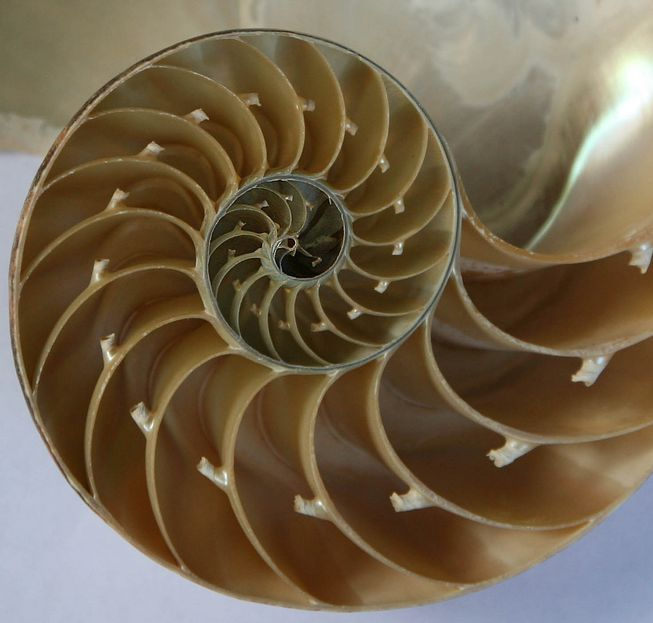
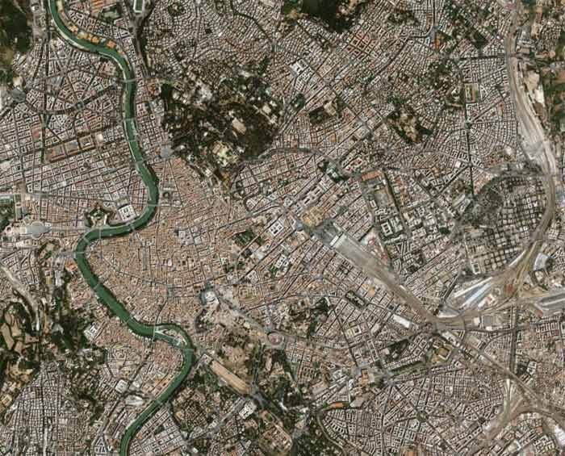
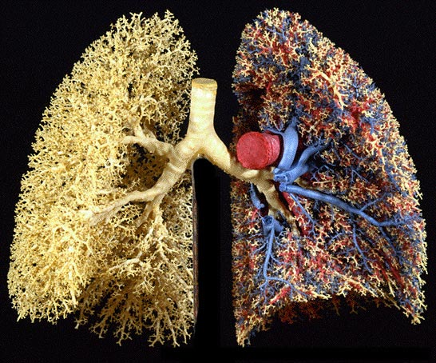

Frattali — visualizzazioni interattive di pattern matematici
queste sono visualizzazioni iterative di pattern matematici complessi.
ogni pattern emerge da regole semplici ripetute all'infinito.
Introduzione ai frattali
I frattali sono forme geometriche che si ripetono nella loro struttura su scale diverse. La loro caratteristica principale è l'auto-similarità: ingrandendo una qualsiasi parte di un frattale, si ottiene una figura simile all'originale. Questi pattern matematici si trovano spesso in natura, come nei fiocchi di neve, nelle foglie delle felci, nella struttura dei broccoli romaneschi, nelle strutture di alcune città e in alcuni organi del corpo umano.



Il termine "frattale" fu coniato nel 1975 da Benoît Mandelbrot, derivando dalla parola latina "fractus" (rotto, spezzato). Queste forme, che sembrano a prima vista irregolari e caotiche, seguono in realtà regole matematiche precise e si rivelano fondamentali per comprendere molti fenomeni naturali e artificiali.
Città frattali
I frattali sono forme geometriche che si ripetono nella loro struttura su scale diverse. La loro caratteristica principale è l'auto-similarità: ingrandendo una qualsiasi parte di un frattale, si ottiene una figura simile all'originale. Questi pattern matematici si trovano spesso in natura, come nei fiocchi di neve, nelle foglie delle felci, nella struttura dei broccoli romaneschi, nelle strutture di alcune città e in alcuni organi del corpo umano.
Il termine "frattale" fu coniato nel 1975 da Benoît Mandelbrot, derivando dalla parola latina "fractus" (rotto, spezzato). Queste forme, che sembrano a prima vista irregolari e caotiche, seguono in realtà regole matematiche precise e si rivelano fondamentali per comprendere molti fenomeni naturali e artificiali.
** FRATTALI
Curva di Koch
La curva di Koch è una delle prime curve frattali mai scoperte, creata dal matematico svedese Helge von Koch nel 1904. Partendo da una semplice linea retta, ad ogni iterazione ogni segmento viene sostituito da quattro segmenti più piccoli, creando un pattern sempre più complesso. La particolarità di questa curva è che, nonostante occupi uno spazio finito, la sua lunghezza diventa infinita dopo infinite iterazioni.
Per ogni iterazione \(n\), la lunghezza \(L_n\) della curva è:
\[L_n = L_0 \left(\frac{4}{3}\right)^n\]
dove \(L_0\) è la lunghezza iniziale del segmento.
La dimensione frattale \(D\) della curva di Koch è:
\[D = \frac{\log 4}{\log 3} \approx 1.262\]
Curva di Koch
4
Fiocco di Neve di Koch
Il fiocco di neve di Koch è creato applicando la curva di Koch ai lati di un triangolo equilatero. Ad ogni iterazione, ogni lato del triangolo viene sostituito da quattro segmenti più piccoli, creando una forma che ricorda un fiocco di neve. La particolarità di questa figura è che, mentre il suo perimetro cresce all'infinito, l'area rimane sempre finita.
Il fiocco di neve invertito è una variante del fiocco di Koch dove, invece di aggiungere triangoli verso l'esterno, li aggiungiamo verso l'interno. Questa semplice modifica crea un pattern completamente diverso che converge verso il centro, dimostrando come piccole variazioni nelle regole di costruzione possano portare a risultati molto diversi.
Fiocco di neve inverso di Koch
4
Triangolo di Sierpinski
Il triangolo di Sierpinski è un frattale creato dal matematico Wacław Sierpiński nel 1915. Partendo da un triangolo equilatero, ad ogni iterazione viene rimosso il triangolo centrale, lasciando tre triangoli più piccoli. Il processo viene ripetuto su ciascuno di questi triangoli, creando un pattern che si ripete su scale sempre più piccole.
La dimensione frattale \(D\) del triangolo di Sierpinski è:
\[D = \frac{\log 3}{\log 2} \approx 1.585\]
L'area totale \(A_n\) dopo \(n\) iterazioni è:
\[A_n = A_0 \left(\frac{3}{4}\right)^n\]
sierpinski triangle
4
Insieme di Mandelbrot
L'insieme di Mandelbrot è probabilmente il frattale più famoso, scoperto da Benoît Mandelbrot nel 1980. È creato da una semplice formula matematica che, quando iterata, produce un pattern infinitamente complesso. La sua particolarità è che, ingrandendo qualsiasi parte del bordo, si trovano sempre nuove forme e dettagli, rendendolo uno degli oggetti matematici più affascinanti da esplorare.
L'insieme di Mandelbrot è definito dalla sequenza:
\[z_{n+1} = z_n^2 + c\]
dove \(z_0 = 0\) e \(c\) è un numero complesso.
Un punto \(c\) appartiene all'insieme di Mandelbrot se la sequenza rimane limitata per \(n \to \infty\).
Insieme di Mandelbrot
100
Bibliografia
Mandelbrot, B. B. (1982). The Fractal Geometry of Nature. W.H. Freeman and Company.
Falconer, K. (2013). Fractals: A Very Short Introduction. Oxford University Press.
Fractal Foundation. (n.d.). Fractal cities. Retrieved May 21, 2025, from https://fractalfoundation.org/OFC/OFC-12-3.html
Peitgen, H. O., & Richter, P. H. (1986). The Beauty of Fractals. Springer-Verlag.
Barnsley, M. F. (2012). Fractals Everywhere. Dover Publications.
von Koch, H. (1904). "Sur une courbe continue sans tangente, obtenue par une construction géométrique élémentaire". Arkiv för Matematik.
Sierpiński, W. (1915). "Sur une courbe dont tout point est un point de ramification". Comptes Rendus de l'Académie des Sciences.